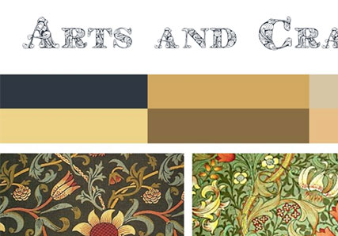

Moodboard
Opgaven
Et moodboard der viser, at du har en begyndende forståelse af den tildelte stilart.
Udarbejdes i Photoshop. Det er på dette stadie vigtigt, at du kan bruge følgende værktøjer: Artboards Movetool Typetool Clipping mask Save as pdf
Forståelse af farve og stil
Opgaven for mig var en svær sag med emnet Arts and Craft. Jeg kendte intet til det og skulle forstå hele konceptet bag ordet Arts and Crafts før jeg kunne gå i gang med moodboardet.
Photoshop
At arbejder i photoshop var ikke svært da jeg har arbejdet med photoshop i nogle år nu. Det var mere ideen bag opgaven som var svært.

Moodboard
Jeg var en af de heldige få, som fik Arts and Craft som design emne. Dette var begyndelsen på en lang eventyr.